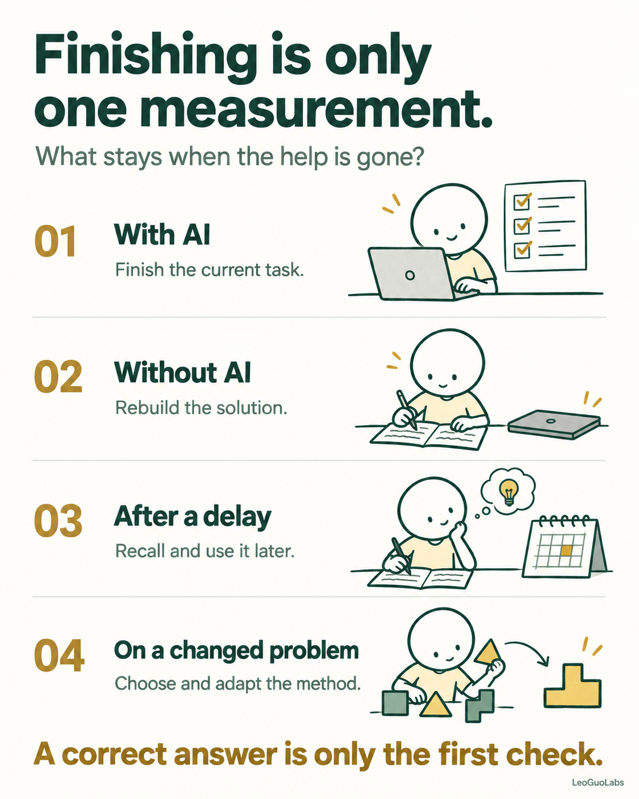
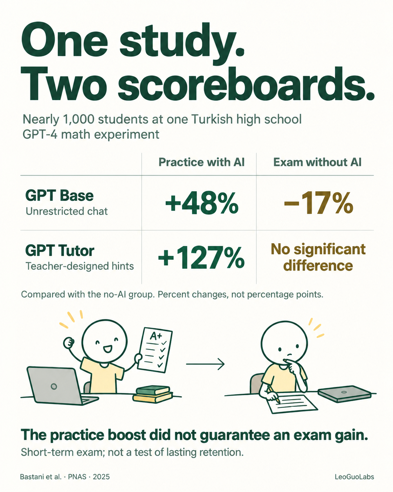
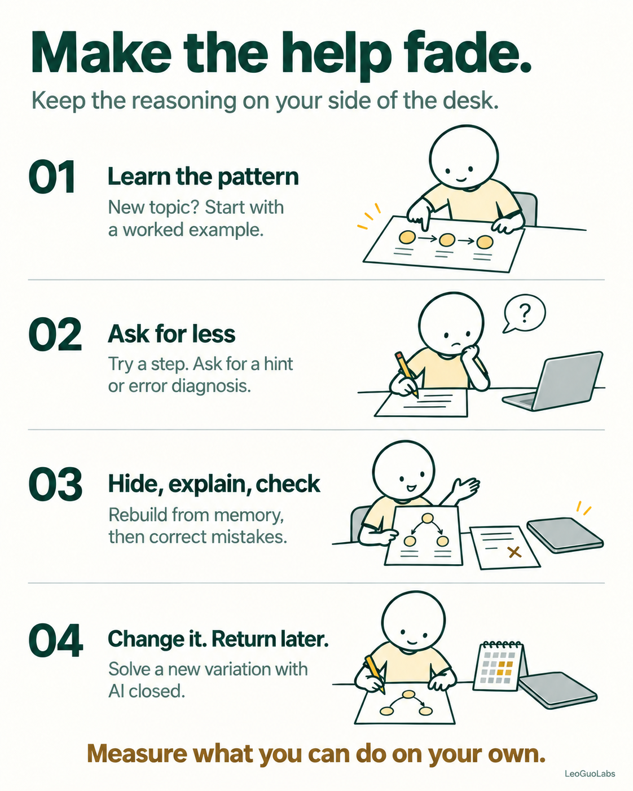

AI can improve today's output while leaving tomorrow's skill almost untouched. The useful question is what the assistance leaves you able to do on your own.
Imagine fixing a spreadsheet late at night. A lookup formula keeps failing, so you ask AI. It returns a clean solution and walks through each argument. You paste it in. The numbers look right. Reading the explanation, you feel that you understand the method.
The next morning, the data changes. There are duplicate keys, a missing match, or a different column layout. With the chat closed, you cannot decide how the formula should behave.
That gap is easy to miss because yesterday's success was real. The sheet worked. The explanation was readable. But following a visible solution and generating a solution independently place different demands on you.
I would judge an AI learning tool partly by the work it leaves in the learner's hands: choosing an approach, explaining a step, noticing an error, and adapting when the problem changes.
Start with assisted performance: can you finish while the tool is available? This is a useful productivity measure. It tells you what the human and the tool can accomplish together.
Independent performance asks what you can do after the support is removed. Retention adds time: can you still retrieve and use the method later? Transfer changes the task: can you recognize when the method applies and adapt it to a new case?
These checks can produce different answers. A correct response with AI open does not establish the other three. Repeating the same exercise immediately, with its steps still fresh, gives you less evidence about transfer than solving a variation that requires a new decision.
The Bjork Learning and Forgetting Lab describes a longstanding problem in learning: smooth performance during practice can diverge from what remains later. A clear explanation feels accessible while it is in front of you. That feeling is an imperfect forecast of future ability.

A randomized mathematics study published in PNAS tested nearly 1,000 students at one Turkish high school. An unrestricted GPT-4 interface raised practice scores by 48% relative to the no-AI group. On the subsequent unaided exam, that group scored 17% below the control group.
A second interface used teacher-designed hints and safeguards. Its practice advantage was 127%, while its unaided exam result was statistically indistinguishable from control. These are relative percentage changes, not percentage points. The safeguards largely removed the exam penalty; they did not establish an exam advantage. The assessment was short-term, so it cannot tell us whether the effects lasted for months.

There is useful counterevidence to any blanket claim that AI prevents learning. In a Harvard physics trial, a carefully structured AI tutor improved immediate post-test performance compared with an active classroom lesson. It used expert solutions, a planned sequence, questions, and feedback. That result concerns a specific tutor and immediate learning, rather than lasting retention.
Taken together, these findings make assistance design a central part of the question. A chatbot that supplies solutions and a tutor that organizes practice create different learning conditions, even when both use a capable language model.
Offloading work to a tool can be sensible. You do not need to memorize every spreadsheet function or turn every routine email into a learning exercise. Sometimes the goal is simply to finish accurately and move on.
The decision changes when you want to build a skill. Name that skill narrowly enough to practise it. “Get better at spreadsheets” is vague. “Choose the right lookup behavior when identifiers are missing or duplicated” gives you something observable to work on.
AI can then help with surrounding work while you keep that decision for yourself. Let it produce a small sample dataset or explain unfamiliar syntax. Predict the result before running the formula. When the result differs, work out which assumption failed.
This is the distinction I find most useful: identify the mental operation you want to retain, then make sure you actually perform it during the session.
Starting with an example can be appropriate when a topic is new. In research on worked examples, novice mathematics learners benefited from studying solution steps compared with unguided problem solving. Withholding every answer can leave a beginner guessing without a useful model of the task.
As the pattern becomes familiar, give yourself more of the work. Move from a complete example to an unfinished one, then to a hint, and eventually to an independent attempt. The right amount of help depends on your prior knowledge and the problem's difficulty.
Ask for feedback that has a specific job. “Here is my attempt. Which assumption fails, and what is the smallest hint that would help me continue?” gives the assistant something more useful to respond to than a request to complete the whole task.
Then hide the solution and reconstruct the reasoning. Reopen it to check and correct your errors. A review of retrieval practice and elaborative learning found that corrective feedback mattered when comparing these approaches. Getting stuck with the answer hidden is information; leaving the mistake unresolved is not a complete learning cycle.

Suppose you need to match orders to customer records. Before asking for a formula, decide what should happen when a customer ID is missing. If the customer table contains the same ID twice, should the sheet return one record, flag the ambiguity, or combine results? That choice comes from the task's requirements.
If lookup syntax is unfamiliar, study a worked example. Then close it and build your own small version. Explain the lookup key, the search range, the returned value, and the intended behavior for a missing match.
Next, change the dataset. Add a duplicate identifier or move a column. Predict which parts of your solution should still work and which assumptions need attention. Ask AI to critique your reasoning after you have made a prediction.
Return later to a fresh case with the chat closed. Notice where you stall. Remembering syntax but choosing the wrong behavior suggests a different gap from understanding the behavior but forgetting an argument. Use that gap to choose your next question.
The same approach can guide a coding session: understand a worked fix, explain why it addresses the bug, then handle a related failure in a different function. A passing test gives you evidence about the code. Explaining and adapting the fix gives you evidence about your understanding.
A faster finished task is worth having. When learning is also the goal, keep a separate measure: what can you now explain, rebuild, diagnose, or adapt with the help removed?
I would rather see a learner finish with one reusable idea they can apply tomorrow than leave with a flawless answer they can only recognize. Use AI to make good explanations and feedback easier to reach, then leave yourself enough work to turn that access into ability.
The next time an answer feels obvious, close the chat and change one part of the problem. What you can do next is the useful signal.